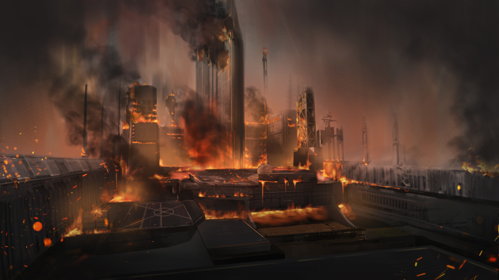
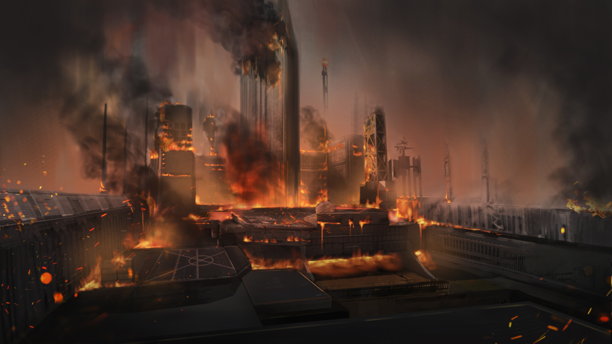

FIGHT FOR THE DAWN
ABOUT
Arknights là một trò chơi di động phòng thủ tháp miễn phí được phát triển bởi các nhà phát triển Trung Quốc Studio Montagne và Hypergryph. Với cốt truyện có chiều sâu và lối chơi đơn giản sẽ đưa các game thủ tới với thế giới nhuộm màu sắc ảm đạm của Terra - một nơi phân biệt đối xử bất công với người không bị nhiễm bệnh (non-infected) và bị nhiễm bệnh (infected) bởi một loại khoáng thạch có tên Oripathy và cũng là nguyên nhân gây ra bệnh truyền nhiễm và sự phân biệt bất công này dẫn đến sự đấu tranh của tất cả con người nơi đây.
Giới thiệu nhân vật
Doctor Ngay từ khi đầu game bạn sẽ được hoá thân vào vai Doctor - một chiến lược gia xuất sắc đã bị ngủ đông bởi một thời gian dài và được đánh thức bởi Amiya - chỉ huy Rhodes Island với mong muốn dùng khả năng chỉ huy, lãnh đạo các cán viên (operater) của bạn để giảm thiểu rủi ro của cuộc chiến bạo loạn ít nhất có thể.
Amiya sở hữu vóc dáng nhỏ nhắn cùng với đôi tai dài của giống loài Cautus ( thỏ tai dài) là người lãnh đạo của Rhodes Island - nơi chữa trị cho các Infected. Cô là người đứng lên đấu tranh cho quyền lợi những người Infected và cung cấp nơi trị bệnh cho họ. Ngoài ra cô còn sở hữu lượng Art (phép thuật) mạnh mẽ trái ngược với vẻ bề ngoài cua mình.

Talutah là ngừời lãnh đạo của dội quân cực đoan tên Reunion - nơi tập hợp các infected đứng lên để chống lại sự bất công phân biệt của thế giới bằng cách dùng vũ lực, đàn áp và phá hoại. Talutah là người sở hữu kiếm pháp và lượng art cực mạnh nhưng sâu bên trong cô là những suy nghĩ đầy sự mâu thuẫn đến bí ẩn.
GUIDE PLAY
Với cách chơi đơn giản là bạn sẽ có một lượng cost đầu game (tự sản xuất ra hoặc game cho), bạn có thể đặt cán viên mình có ra chiến trường theo vị trí bạn mong muốn để tiêu diệt địch và bảo vệ thành luỹ của mình. Các cán viên có nhiều vai trò khác nhau như: xạ thủ, đỡ đòn, quân tiên phong, pháp sư, trị liệu, v..v... Hãy đặt họ ở vị trí thích hợp để có thể vận dụng tốt khả năng của mình và giành chiến thắng.
Một số hình ảnh trong game và nhân vật

.png)
GALLERY
Nếu nói Hypergryph là nhà phát triển xây dựng cốt truyện cho game và bản đồ, cách thức chơi thì chúng ta không thể không nhắc tới Studio Montagne với phong cách vẽ và sáng tạo đậm chất ảm đạm khiến game có chiều sâu và làm người chơi có trải nghiệm tốt hơn khiến họ hiểu về bản chất của thế giới Terra mà họ phải đối mặt khi hoá thân vào nhân vật Doctor đầy rủi ro đến mức nào.
Hình ảnh phông nền game và cốt truyện


 

Lời kết
＂Với một cốt truyện có chiều sâu cùng với lượng đồ hoạ khá đầu tư, đây là một game miễn phí đáng để trải nghiệm thử dù chỉ một lần. Tuy mới phát hành hơn 2 năm nhưng Arknights luôn mang về cho mình vị trí top 50 doanh thu của làng game Trung Quốc trong thời gian qua.＂
Copyright by